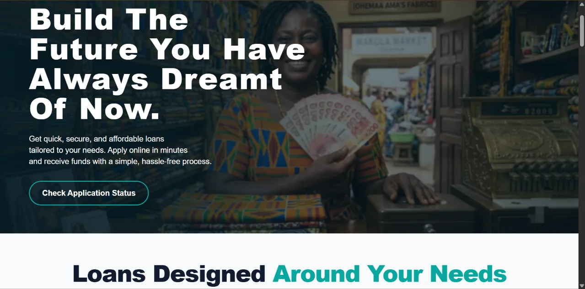
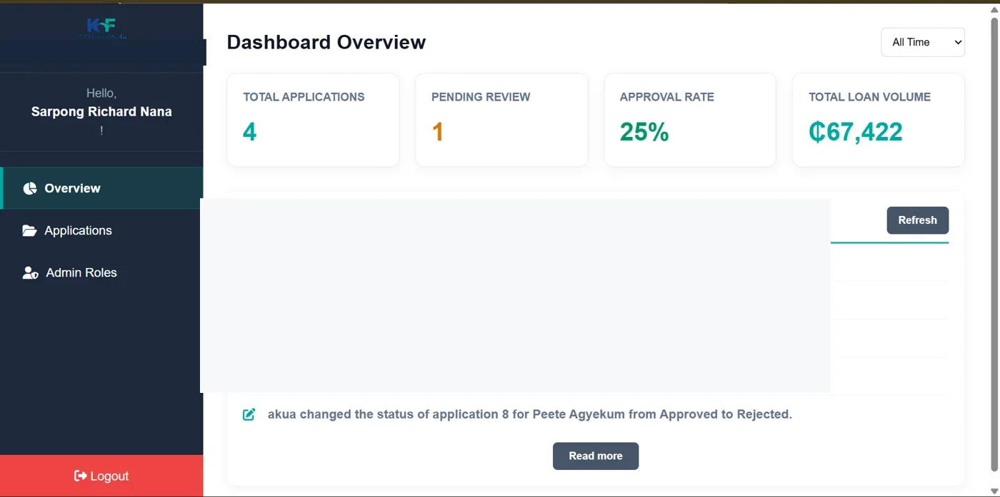
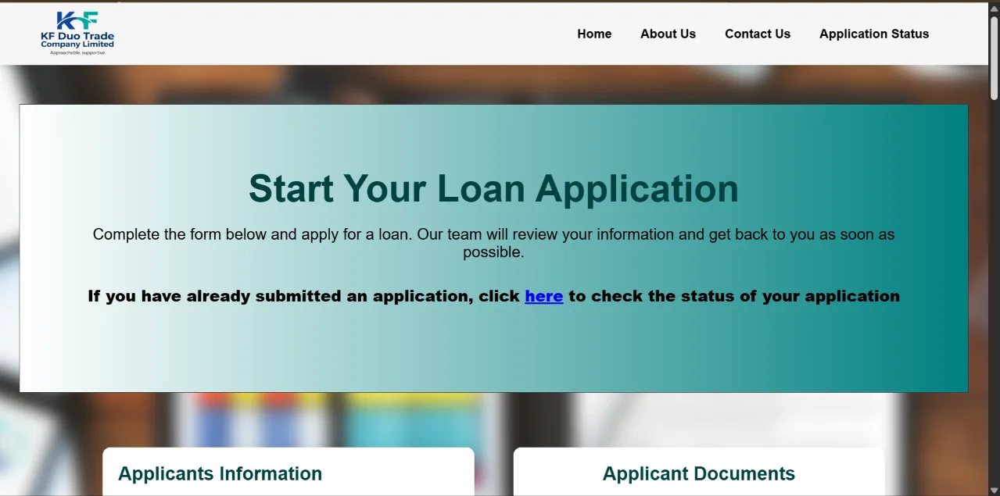
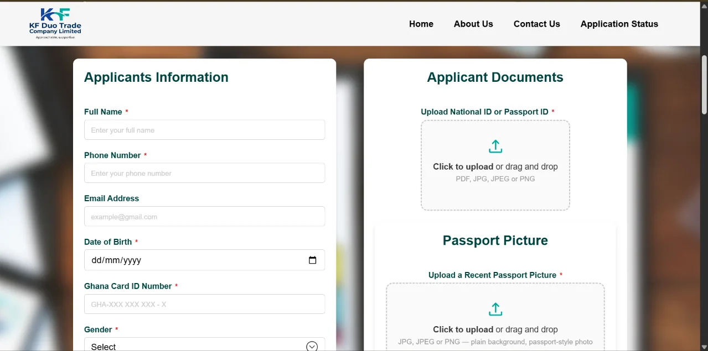
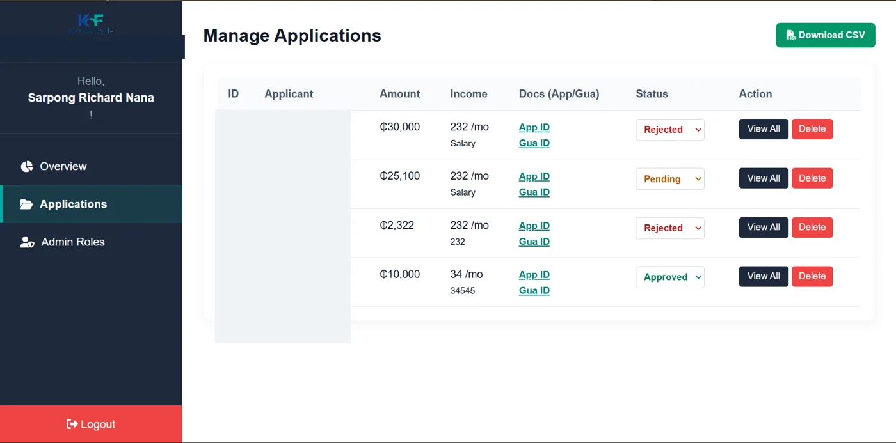
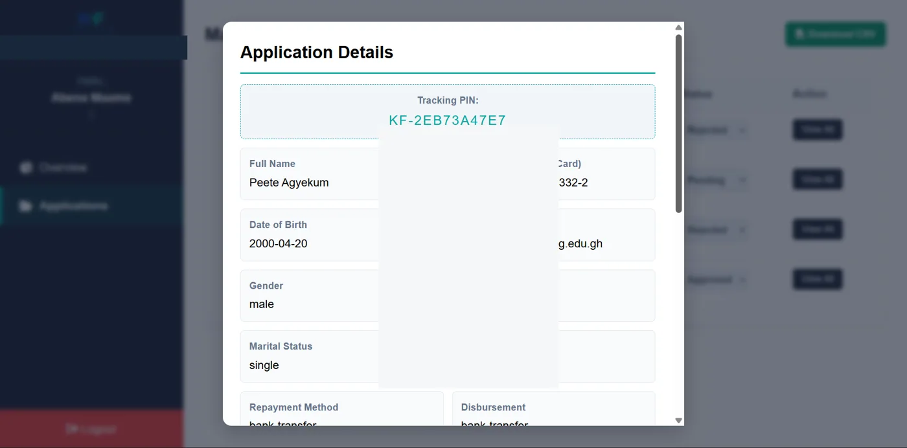
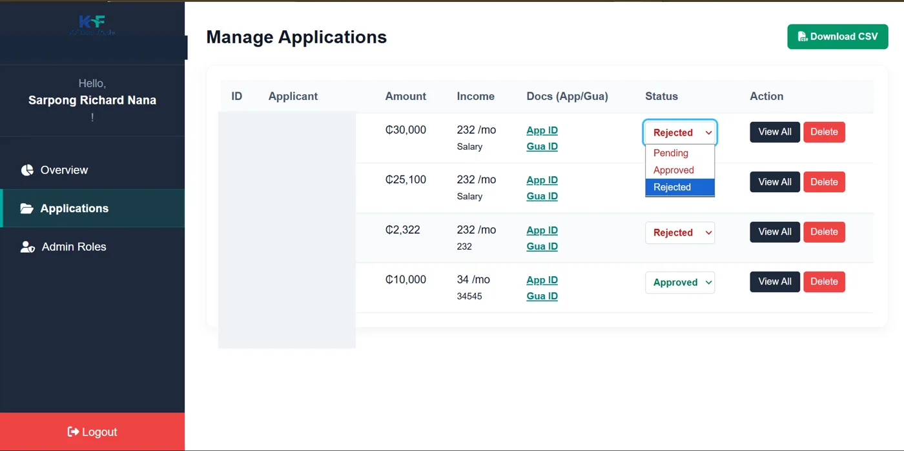
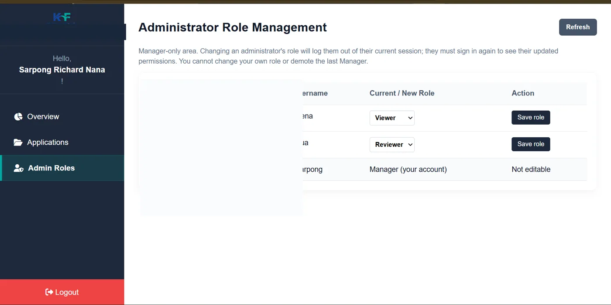

Selected work / Client team project / DCIT208
KF Duo TradeLoan applications, tracking and staff review in one system.
A seven-person university engineering project for KF Duo Trade Company Limited, replacing paper-heavy application handling with a digital applicant journey and an administrative workspace.
From applicant experience to staff operations
Screenshots supplied from the project. Identifying information in administrative views has been obscured for this public portfolio draft.








The problem
Replacing manual loan intake
The client needed a more structured way to receive applications, store submitted information and supporting documents, let applicants check their status, and give authorized staff tools to review and manage cases.
What we built
Two connected experiences
Applicants can submit details and documents, receive a tracking code, and check their application's status. Staff use authenticated role-based tools to review records, view documents, change statuses, and track activity.
My contribution
Frontend, integration, backend collaboration
I contributed frontend styling and applicant-facing screens, client-side validation, API integration, deployment configuration and engineering workflows. I also worked substantially with teammates on backend development, using AI assistance to help design, implement, troubleshoot and test backend functionality.
Backend work was collaborative: I do not claim sole authorship, and Git commit attribution alone does not capture every discussion, debugging session or AI-assisted contribution.
Data handling and maintainability
The Node.js/Express and SQLite implementation includes administrative access controls, application status updates, private document handling, rate limiting, password hashing, and audit-related workflows. We used issues, pull requests, peer reviews, testing, continuous integration and AI-usage documentation as part of the course engineering process.
Reflection
Building collaboratively
The project strengthened my ability to connect a user-facing website to backend services, reason about data and privacy requirements, contribute to shared code and troubleshoot deployment and integration issues with a team.